Learning Objectives
- Explain why the types of stratigraphy differ in the property they analyse, and why sequence stratigraphy depends on interpretation
- Distinguish lithostratigraphic surfaces (facies contacts) from sequence stratigraphic surfaces, and explain why the two commonly do not coincide
- Define isochronous and diachronous surfaces, and rank surfaces by their reliability as time markers (event- vs stage-significant)
- Define allostratigraphy and place it between lithostratigraphy and sequence stratigraphy, including the debate on parasequences
- Apply Walther’s Law to a vertical succession, and recognise where it does not apply
- Interpret grain-size and thickness trends and stacking patterns, and explain why a trend alone is not an interpretation
- Correlate sections by surfaces rather than by rock types, following a stepwise workflow
- Use the case studies (SE Germanic Basin; coastal Fars, Iran) to explain how facies, composition and biostratigraphy support a correlation
Part I: Two Ways to Subdivide a Basin Fill
1. Same rocks, different questions
Every sedimentary succession can be described at many scales, and at every scale three different questions can be asked about it. Lithostratigraphy asks what is the rock? Facies analysis asks where did it form? Sequence stratigraphy asks how did the depositional trends change through time? The first is answered by description, the second needs interpretation, and the third cannot be answered without the second.
Heinz & Aigner (2003) organised their observations of Quaternary gravels in the Rhine glacier area (SW Germany) in a hierarchy of nested units, from particles and strata through larger depositional and facies bodies to genetic sequences and the basin fill. Figure 1 is a simplified version used in the lecture (particles, strata, facies units, architectural elements, sequences). Each scale is studied with different data, from samples and cores to outcrops, ground-penetrating radar and seismic.
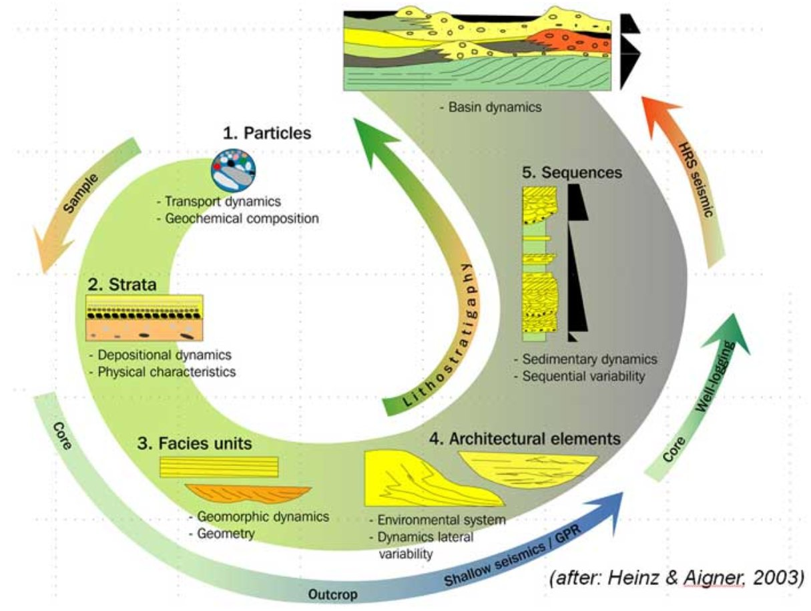
Click to open full resolution2. Every stratigraphy analyses one property
Stratigraphy is a family of methods, each defined by the property it analyses (Catuneanu, 2006, Fig. 1.3):
| Stratigraphy | Property analysed |
|---|---|
| Lithostratigraphy | lithology |
| Biostratigraphy | fossils |
| Magnetostratigraphy | magnetic polarity |
| Chemostratigraphy | chemical properties |
| Chronostratigraphy | absolute ages |
| Allostratigraphy | discontinuities |
| Seismic stratigraphy | seismic data |
| Sequence stratigraphy | depositional trends |
Lithology, fossils or polarity can be measured or described. Depositional trends (aggradation vs erosion, progradation vs retrogradation) cannot: they are interpreted from facies and their stacking. Catuneanu (2006) draws the consequence: conventional correlations need little interpretation, whereas a sequence stratigraphic framework depends on the interpretation of the data. That is its strength, because it allows prediction, and its risk, because a wrong facies interpretation gives a wrong framework. The trends themselves are controlled by the interplay of sedimentation and base-level shifts (Modules 1 and 3).
3. Two kinds of lines on a cross-section
Figure 2 (Catuneanu, 2006, Fig. 1.12) plots time against distance along dip. Three formations sit side by side: a fluvial system (A), a coastal system (B) and a shallow-marine system (C). The dashed boundaries between them are lithostratigraphic surfaces: facies contacts that run across time, so they are highly diachronous. The solid lines are sequence stratigraphic surfaces: they mark changes in depositional trends, here set by the turnaround points between transgression and regression, so they are event-significant.
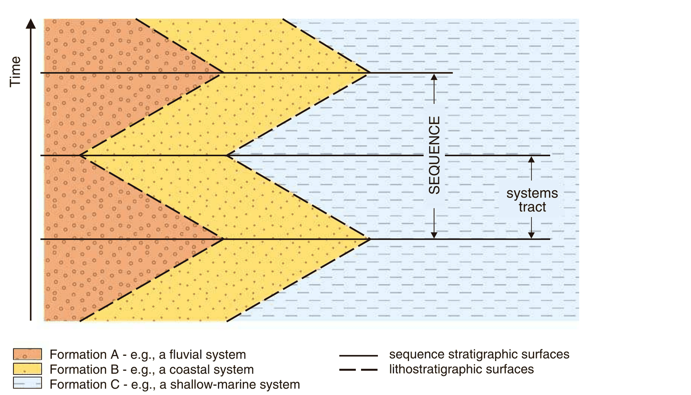
Click to open full resolutionRead the figure carefully
The formation boundaries cross the sequence boundaries; each systems tract contains all three formations, and each formation belongs to several systems tracts. In this example there is no break in sedimentation: the cyclicity comes only from the shifting balance between the rate of base-level rise and the sedimentation rate (Catuneanu, 2006, caption of Fig. 1.12). A sequence does not need an unconformity.
4. One section, subdivided twice
The contrast is visible even in a single vertical profile (Figure 3; Catuneanu, 2006, Fig. 1.13, modified from Posamentier & Allen, 1999). Lithostratigraphy defines formations and members by lithology, often irrespective of depositional environment; sequence stratigraphy defines units by the event-significance of their bounding surfaces. At the top of the profile the boundary between formations B and C coincides with a subaerial unconformity. Lower down, the two schemes part: formation A contains the highstand deposits of the older sequence and the thin fluvial or estuarine unit above the lower unconformity, so a sequence boundary runs inside formation A; and the member boundary in formation B does not coincide with the maximum flooding surface. The curve is a gamma-ray log; we do not cover well logs in this course, so read it simply as a proxy for grain size.
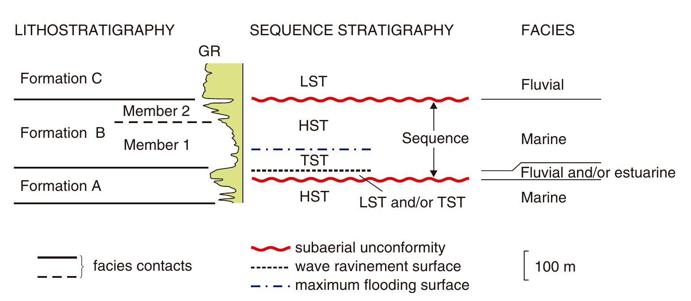
Click to open full resolution5. Time lines and diachronous surfaces
An isochronous surface has the same age everywhere: it is a time line. A diachronous surface has different ages in different places; in a time–distance plot its slope is the rate of diachroneity (Figure 4). Facies contacts are diachronous by nature, because a facies boundary travels with the environment that produced it. Sequence stratigraphic surfaces are generally of low diachroneity, but they are not perfectly isochronous: geoscientists use them as proxies for time lines. True time markers exist, such as bentonites (altered volcanic ash beds) and magnetic polarity reversals, but they are not always present.
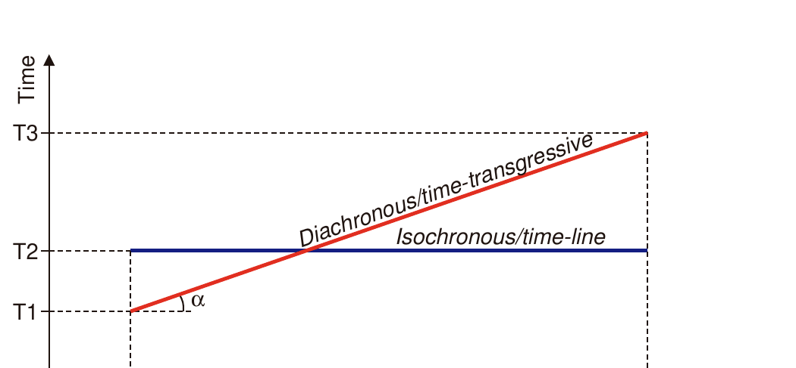
Why accept a proxy? Discussing the boundaries between systems tracts, Catuneanu (2006, p. 308) quotes Posamentier & Allen (1999): even if these surfaces are diachronous on the scale of the basin, the difference in age is commonly below biostratigraphic resolution. Being below the resolution does not make a surface isochronous: it means the diachroneity cannot be measured with the data at hand. The estimator below makes this concrete. It also shows why the strongly time-transgressive surfaces (Section 6) are still treated with caution.
Diachroneity estimator (for a surface that forms while the shoreline moves)
A stage-significant surface (Section 6) forms progressively as the shoreline moves, so its age changes along dip at the rate of shoreline shift. Enter schematic values; this is arithmetic, not data.
6. Not every surface is an equally good time marker
Catuneanu (2006, Fig. 7.31; Figure 5) divides the surfaces of sequence stratigraphy into two families:
| Family | Surfaces | How they form | Diachroneity along dip |
|---|---|---|---|
| Event-significant | correlative conformities, maximum regressive surface, maximum flooding surface | at a change in the direction or type of shoreline shift | limited by the rate of sediment transport: quasi-time lines |
| Stage-significant | subaerial unconformity, transgressive ravinement surfaces, regressive surface of marine erosion | during a stage of shoreline shift | set by the rate of shoreline shift: clearly diachronous |
Along strike, all surfaces become more diachronous where subsidence and sedimentation rates vary along the coast. The practical rule: build a time framework on the event-significant surfaces whenever you can, and remember that a ravinement surface or a subaerial unconformity is a surface, not a moment. These surfaces are treated one by one in the next module.
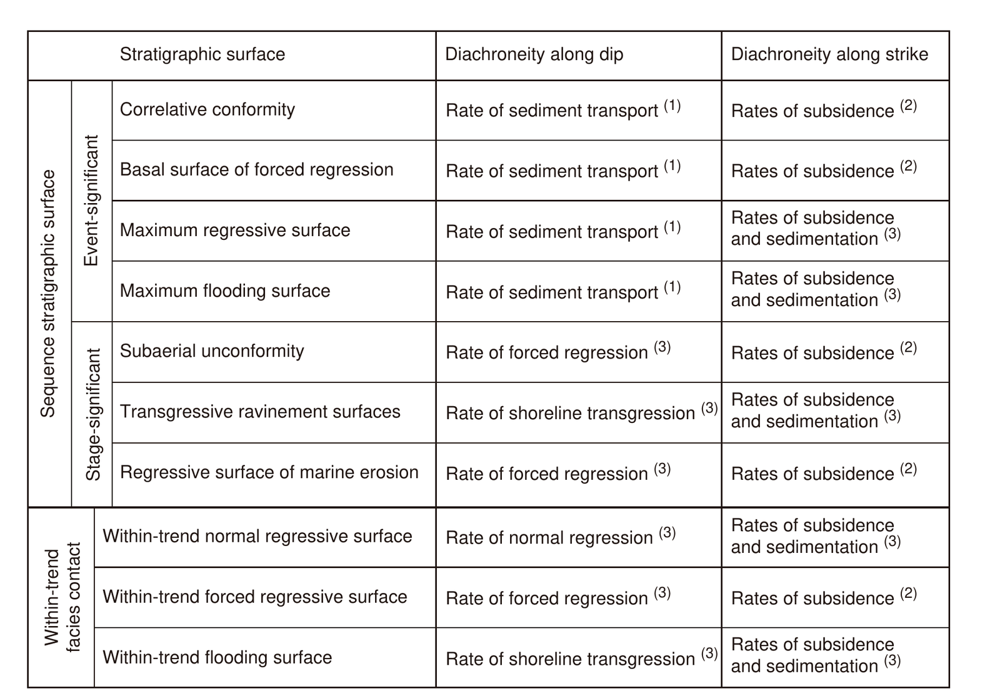
Click to open full resolution7. Allostratigraphy
Allostratigraphic units were introduced in the 1983 North American Stratigraphic Code (NACSN, 1983). As currently amended (NACSN, 2005, Art. 58, quoted in Catuneanu, 2006, p. 13), an allostratigraphic unit is “a mappable body of rock that is defined and identified on the basis of its bounding discontinuities”. Units, in decreasing rank: allogroup, alloformation (the fundamental unit) and allomember. Any mappable lithological contact may qualify as a boundary, with or without a hiatus: any of the contacts in Figure 6. Catuneanu (2006) places allostratigraphy between lithostratigraphy and sequence stratigraphy: it takes lithostratigraphy to a higher level of genetic interpretation. Unlike sequence stratigraphy, it does not require the bounding contacts to be interpreted in terms of base-level change and shoreline shift.
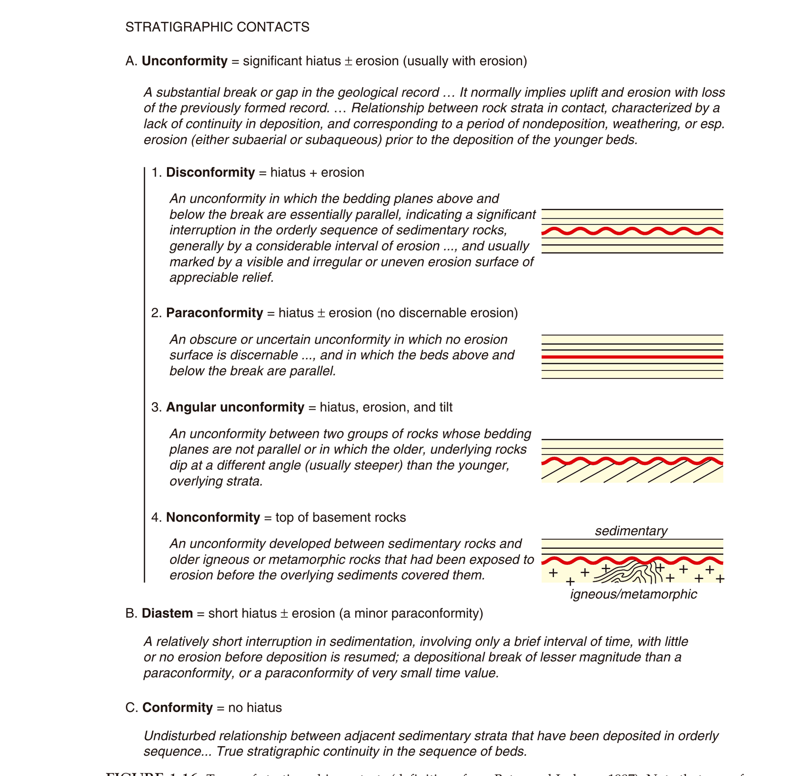
Click to open full resolution| Lithostratigraphy | Allostratigraphy | Sequence stratigraphy | |
|---|---|---|---|
| Units bounded by | lithological contacts | mappable discontinuities | surfaces that mark changes in depositional trends |
| Interpretation | little; describes rock types | contacts mapped; interpretation in terms of base level not required | facies analysis and shoreline shifts required |
| Time significance | boundaries often highly diachronous | depends on the contact | low diachroneity; proxies for time lines |
| Units | group, formation, member | allogroup, alloformation, allomember | sequence, systems tract |
The same physical contact can be all three at once: a lithostratigraphic boundary, an allostratigraphic boundary and a sequence stratigraphic surface. What changes is the question asked about it.
Case study: parasequences, an allostratigraphic misfit?
The parasequence was defined as a relatively conformable succession of genetically related beds or bedsets bounded by marine-flooding surfaces, typically shallowing upward, and introduced as the building block of seismic-scale systems tracts (Van Wagoner et al., 1990). Figure 7 shows two classic examples: (A) a tidal flat shallowing from subtidal sandstone to supratidal mudstone and coal; (B) a wave-dominated shoreface shallowing from offshore mudstone to foreshore sandstone.
Catuneanu & Zecchin (2020) argue that flooding surfaces are allostratigraphic contacts, restricted to coastal and shallow-water settings where an abrupt deepening can be demonstrated. Parasequences therefore have a smaller extent than systems tracts, and systems tracts do not always consist of stacked parasequences. They propose to use sequences and systems tracts at all scales, including high resolution. The concept is still in use: Colombera & Mountney (2020) studied 1163 parasequences in a database to examine their geological significance. This course follows the model-independent approach, but you will meet parasequences throughout the literature.
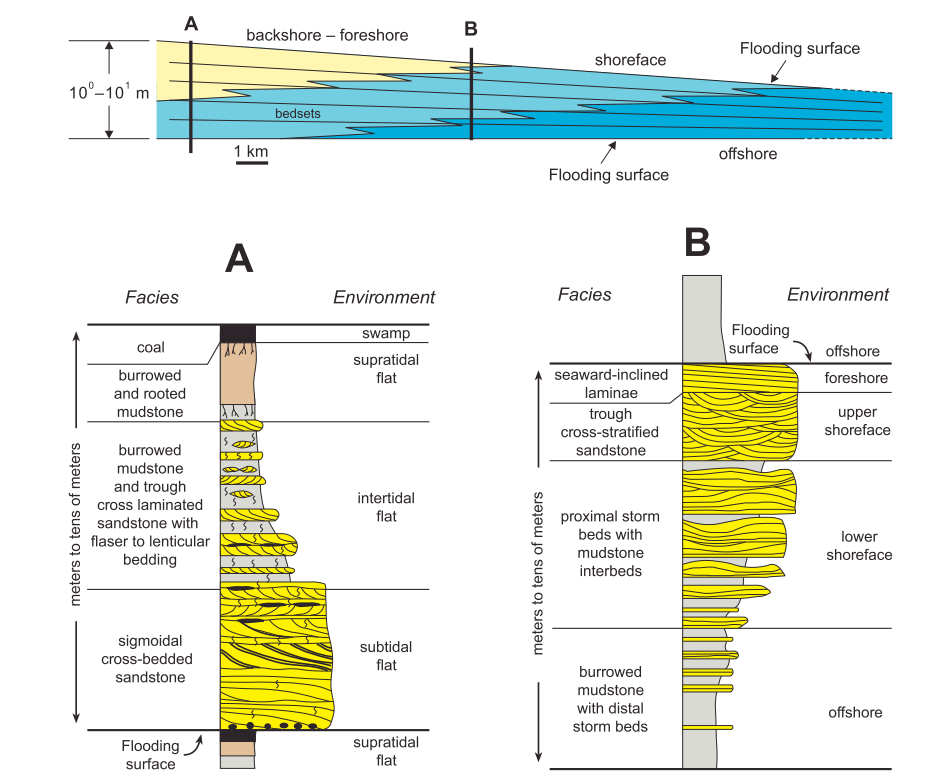
Part II: From Facies to Depositional Trends
8. Two observations decide every surface
“The interpretation of sequence stratigraphic surfaces is based on two fundamental observations: the type of stratigraphic contact, conformable or unconformable; and the nature of facies (depositional systems) which are in contact across each particular surface” (Catuneanu, 2006, p. 12). Neither observation is lithology alone. The reconstruction of paleodepositional environments is therefore a prerequisite for sequence stratigraphy, whereas a lithostratigraphic cross-section requires only the mapping of lithological contacts.
- Type of contact: conformable or unconformable; scoured or sharp; evidence of a hiatus (soils, roots, lags, hardgrounds).
- Facies across the contact: which depositional systems meet, and whether they are genetically related or juxtaposed.
9. Walther’s Law
Walther’s Law links vertical and lateral changes of facies. In Middleton’s (1973) wording: “in a conformable succession, the only facies that can occur together in vertical succession are those that can occur side by side in nature.” Catuneanu (2006, Fig. 2.6) adds: a vertical change of facies implies a corresponding lateral shift of facies within a relatively conformable succession of genetically related strata. The principle applies at the scale of a depositional system and at the scale of systems tracts, whose internal architecture consists of progradational or retrogradational shifts of facies.
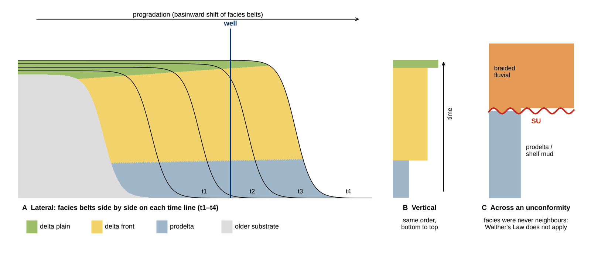
Click to open full resolution10. Where Walther’s Law stops working
Vertical changes across a sequence-bounding unconformity may juxtapose genetically unrelated successions, and must not be used to reconstruct the paleogeography of one time slice (Catuneanu, 2006, p. 21). Figure 9 shows the contact between the Burgersdorp Formation and the overlying Molteno Formation (Triassic, Karoo Basin): meandering fluvial deposits with lateral accretion below, amalgamated braided systems above, an abrupt increase in energy, and a stratigraphic hiatus of about 7 Myr (Catuneanu et al., 1998a, in Catuneanu, 2006).
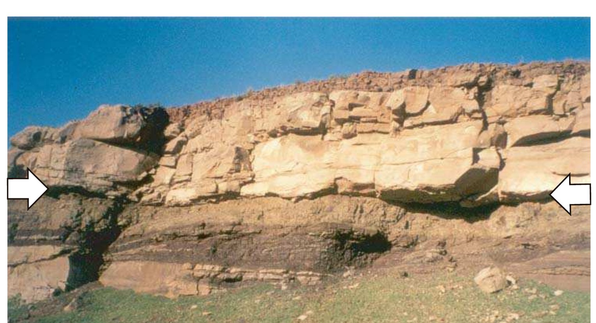
Click to open full resolutionCryptic unconformities
In proximal successions of coarse braided-fluvial deposits, a subaerial unconformity can be difficult to distinguish from any other channel scour (Miall, 1999, in Catuneanu, 2006). Where facies and paleocurrents do not change across it, petrographic studies of framework grains and cements may provide the only solid criteria. Catuneanu (2006, p. 22) cites the Lower Castlegate Sandstone (Book Cliffs, Utah), where a nonmarine sequence boundary was traced into a continuous braided succession only by subtle changes in detrital composition, and notes that secondary glauconite formed under subaerial conditions can help recognise sequence-bounding unconformities, while the distribution of early diagenetic clay minerals may indicate changes in accommodation and the position of sequence stratigraphic surfaces.
11. Vertical trends: what you can measure
In outcrop or core you can measure grain size and bed thickness (Figure 10). Coarsening upward occurs, for example, in a prograding shoreface or delta front; fining upward in a channel fill or a transgressive succession; thickening and thinning upward commonly reflect increasingly proximal or distal positions. But a trend is not an interpretation. A coarsening-upward package can be a prograding shoreface, or a crevasse splay building into a floodplain far from any shoreline. Only trend + facies + the nature of the contacts gives an interpretation of shoreline shift.
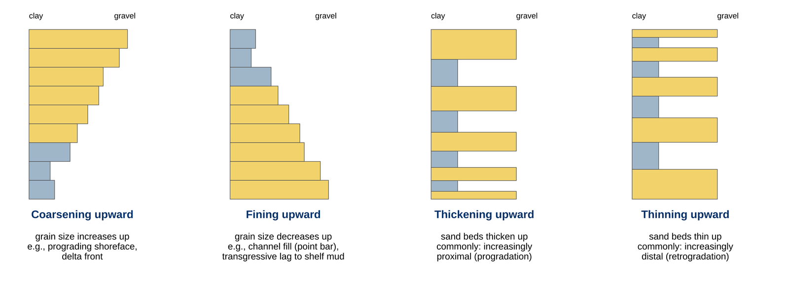
12. Stacking patterns
How successive upward-shallowing units are stacked records the balance between sedimentation and accommodation (concept after Van Wagoner et al., 1990): progradational when sedimentation outpaces accommodation, aggradational when the two keep pace, retrogradational when accommodation outpaces sedimentation (Figure 11). This is the same balance that controls shoreline trajectories (Module 1), written in the rock, and it is the observational basis for systems tracts later in the course. Stacking patterns can also be recognised from grain-size trends and facies alone, where no flooding surface is visible.
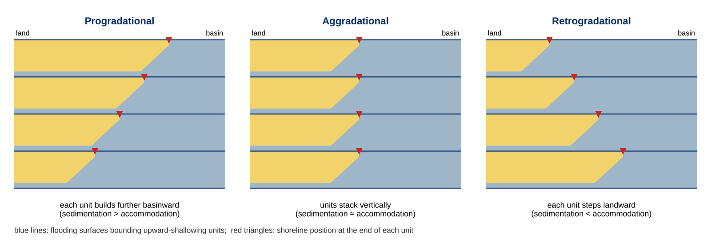
Case study: Permian–Triassic of the SE Germanic Basin (NE Bavaria)
Ravidà et al. (2022) studied the cored wells Obernsees-1 and Lindau-1, from the Middle Permian into the Triassic Buntsandstein (Figure 12). The depth columns carry the lithostratigraphic units (Rotliegend, Zechstein, Lower, Middle and Upper Buntsandstein). Next to them are the sedimentological logs, deepening- and shallowing-upward trends derived from vertical changes in grain size and facies associations, and detrital modes from sandstone petrography. The Permian–Triassic boundary is drawn in both wells; the onset of braided fluvial sequences marks it.
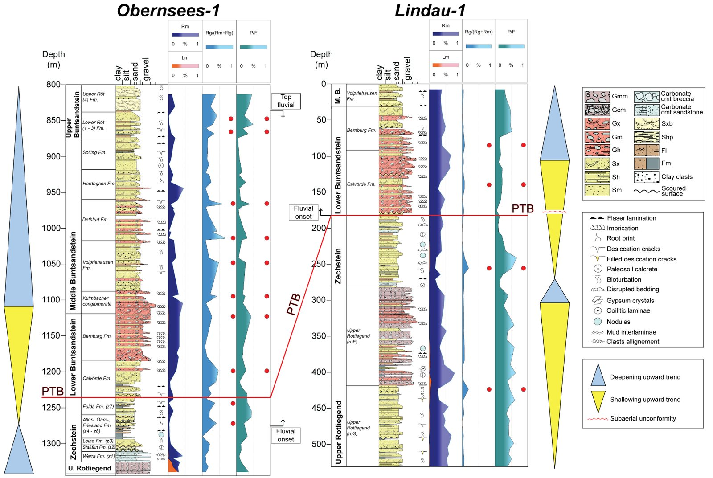
Click to open full resolutionFigure 13 translates the Obernsees-1 core into paleoenvironments: alluvial fans passing into fan deltas in the Upper Rotliegend; sabkha and meandering rivers in the Zechstein; braided rivers at the base of the Buntsandstein; then changes in fluvial style and aeolian deposition higher up. The formation names come from lithology; the landscapes come from facies analysis, that is, from Walther’s Law applied to the core. Most of the succession is continental, without clinoforms or marine flooding surfaces. The detrital composition shows that the two wells recorded distinct drainage evolutions, which the authors attribute to upstream climatic and tectonic controls.
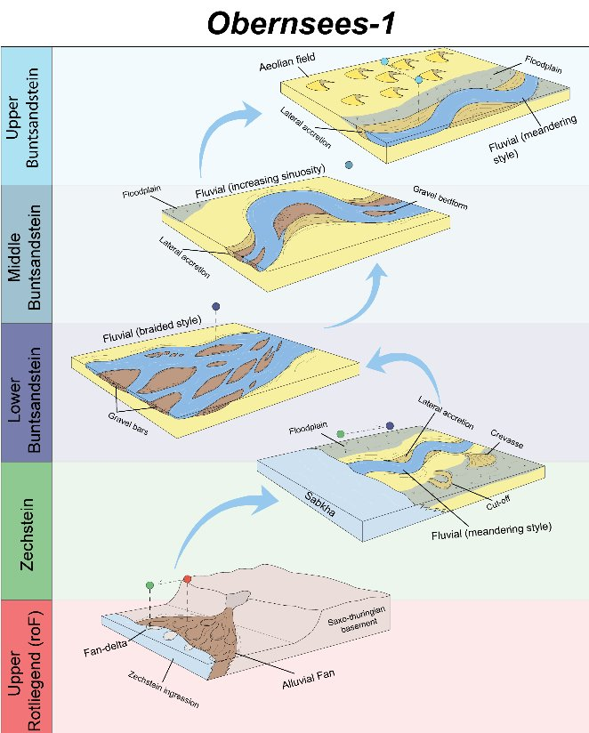
Part III: Correlation
13. Correlate surfaces, not rock types
A sandstone in one section and a sandstone in the next are not necessarily the same age, because facies belts shift through time. The surfaces that record those shifts are the closest we get to time lines. A stepwise workflow, following the logic of Catuneanu (2006, caption of Fig. 1.15):
- Facies analysis in every section: interpret depositional environments.
- Trends and contacts: grain size, thickness and stacking; conformable or not.
- Key surfaces: identify them in each section from steps 1–2.
- Correlate the surfaces, starting with the best time markers.
- Add the facies contacts within each package last.
14. The same data in two frameworks
Figure 14 (Catuneanu, 2006, Fig. 1.15) shows the workflow. Panel 1: vertical profiles with interpreted paleoenvironments (meandering and braided fluvial, estuary mouth and central estuary, delta plain, delta front). Panel 2: the sequence stratigraphic framework: subaerial unconformities, a wave-ravinement surface, a maximum flooding surface, a maximum regressive surface and higher-frequency maximum regressive surfaces (deltaic clinoforms, close to time lines). Catuneanu notes that all are good chronostratigraphic markers except the wave-ravinement surface, which is highly diachronous; recall from Section 6 that the subaerial unconformity is also stage-significant.
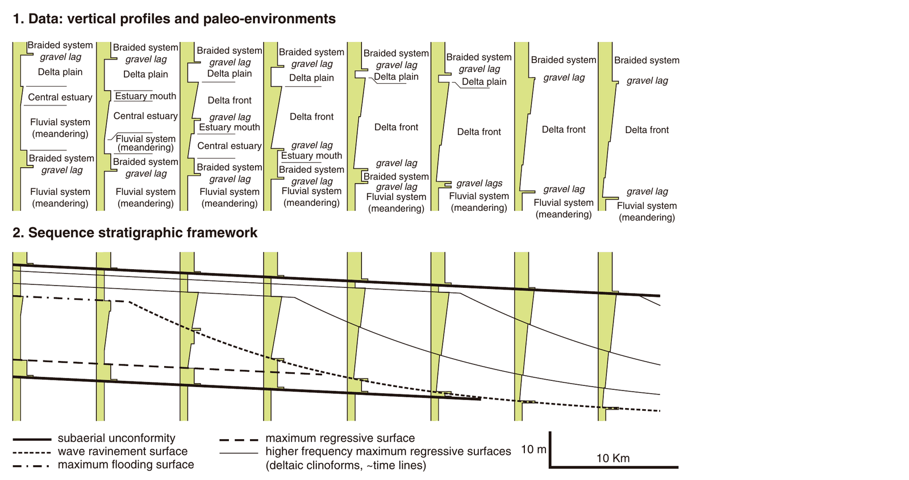
Click to open full resolutionPanel 3 places the facies inside the framework (A meandering, B braided, C estuary mouth, D central estuary, E delta plain, F upper delta front, G lower delta front–prodelta). Panel 4 is the lithostratigraphic section of the same data: formation A is sandstone-dominated, B and C are mudstone-dominated with silty and sandy interbeds, and B and C are separated by A. Formation A combines sandstones of different environments and ages. As Catuneanu puts it, lithostratigraphic units give only descriptive information on lithological distribution, which may give little insight into paleogeography and so be of little use for predicting lithologies away from the data points.
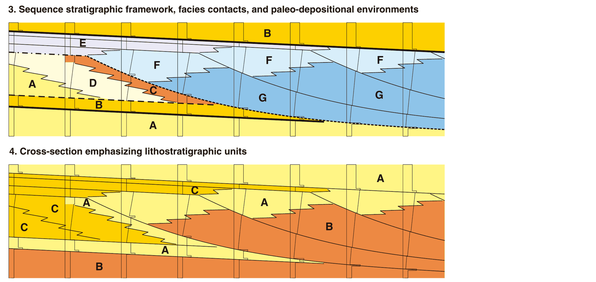
Click to open full resolution15. Try it: correlate three sections
Three sections, 5 km apart (Figure 16). Before opening the solution, answer: where are the most proximal and most distal environments? Which horizons could be time lines? Which contacts are facies boundaries that shift through time? Legend: Kohle = coal; Siltstein mit Pflanzenhäckseln = siltstone with plant debris; Mittel-/Grobsandstein = medium/coarse sandstone; Fein-/Mittelsandstein = fine/medium sandstone; karbonatzementierter Horizont = carbonate-cemented horizon; sandiger Siltstein = sandy siltstone; mariner Tonstein = marine mudstone.
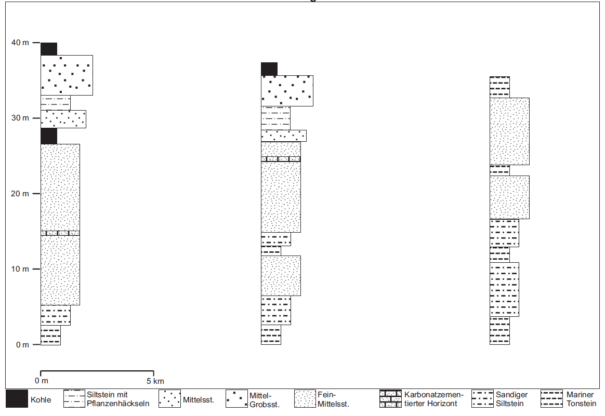
Show one possible solution
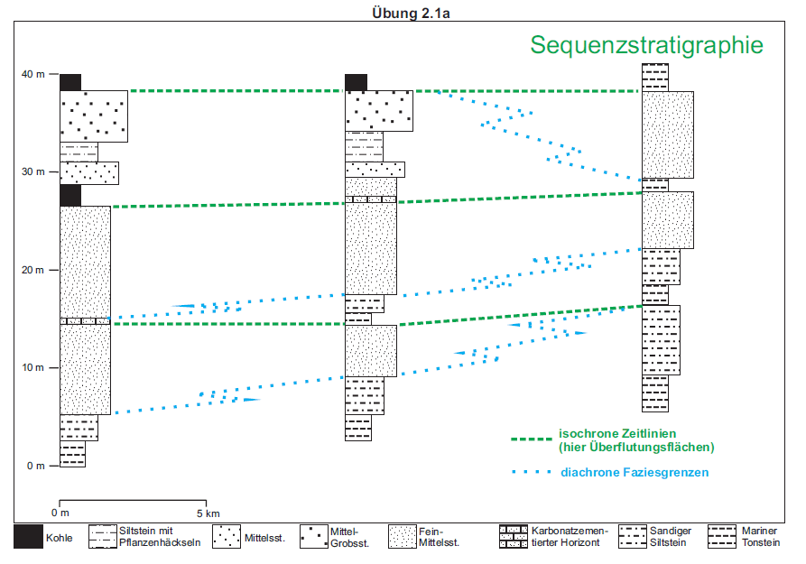
Proximal environments (coal, coarser sand) are on the left; distal ones (marine mudstone) on the right. The time lines, interpreted as flooding surfaces, follow the carbonate-cemented horizons and the bases of the coal beds in the proximal sections and continue into the marine mudstone. The facies boundaries climb across the section: between two time lines, each sand body steps basinward. A layer-cake correlation of sand to sand would cross the time lines.
Case study: Albian–Turonian carbonate platforms, coastal Fars (SW Iran)
Vincent et al. (2015) studied a 300 km transect with five outcrop sections (Kazhdumi and Sarvak formations). In the Albian the system was a muddy carbonate ramp rich in orbitolinid foraminifers; in the Cenomanian–Turonian, rudist-rimmed platforms around intra-shelf basins. Combining facies, texture and new biostratigraphic data, they recognised three Albian, three Cenomanian and one Turonian third-order sequence, as stated in the abstract (Figure 18). Several sequence boundaries record long subaerial exposure, with local soils and continental deposits; the expression of exposure varies laterally, and where macroscopic evidence was lacking, petrography and carbon and oxygen stable isotopes revealed it.
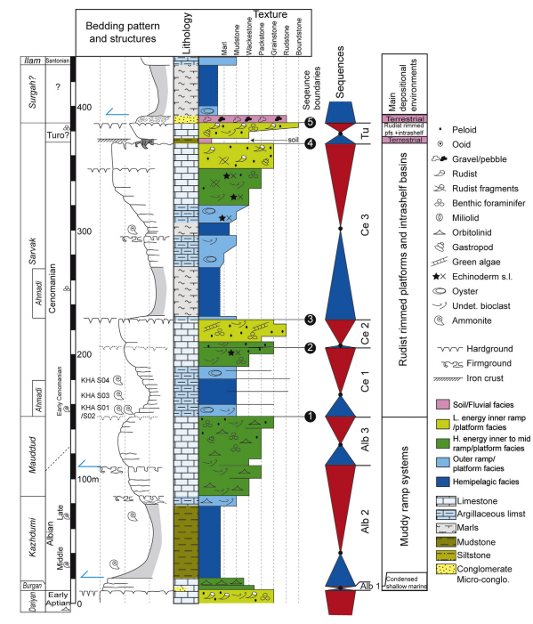
Click to open full resolutionThe regional correlation (Figure 19) was constrained by ammonite biostratigraphy and sedimentological data. The sequences change facies and thickness between sections; the Cenomanian–Turonian interval varies from 0 to 300 m, controlled by the Qatar–Fars high and by salt domes. The correlation is by sequences, tested by biostratigraphy, not by matching similar limestones.
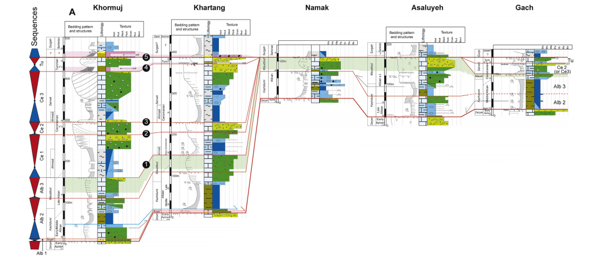
Click to open full resolutionGoing Further
“Relatively conformable” depends on scale
Walther’s Law applies within relatively conformable successions. Catuneanu (2019a, Fig. 82 and accompanying text) points out that relative conformity is scale-dependent: a relatively conformable succession may contain internal unconformities of equal or lower hierarchical rank, as long as the strata below and above remain genetically related in a paleogeographic context at the selected scale. An unconformable maximum flooding surface formed by sediment starvation, underlain and overlain by marine condensed sections, preserves that continuity. Conversely, a genetic sequence may include a subaerial unconformity of equal rank that breaks paleogeographic continuity where it is developed. Before applying Walther’s Law, decide at which scale you are working.
Biostratigraphy tests the framework
In coastal Fars, ammonite biostratigraphy constrained the correlation of sequences, and petrography and stable isotopes revealed exposure surfaces where field evidence was lacking. In the Germanic Basin, sandstone composition distinguished drainage systems that facies alone would not separate. Biostratigraphy is not a rival to sequence stratigraphy: it is an independent check that the surfaces used behave as time lines at the available resolution.
Key Points Summary
- Each stratigraphy analyses one property; sequence stratigraphy analyses depositional trends, which must be interpreted
- Lithostratigraphic boundaries are drawn where the rock changes, sequence stratigraphic surfaces where the trend changes; they commonly do not coincide
- Facies contacts are diachronous; sequence stratigraphic surfaces are proxies for time lines, accepted where diachroneity is below the available resolution
- Event-significant surfaces (correlative conformities, MRS, MFS) are quasi-time lines along dip; stage-significant surfaces (SU, ravinement surfaces, RSME) are diachronous at the rate of shoreline shift
- Allostratigraphy uses discontinuities without interpreting them in terms of base level; flooding surfaces, and hence parasequences, belong here (Catuneanu & Zecchin, 2020)
- Facies analysis comes first; surfaces are interpreted from the type of contact and the facies across it
- Walther’s Law links vertical and lateral facies changes only within relatively conformable, genetically related successions; across unconformities it fails, and that failure is a clue
- A trend is not an interpretation: trend + facies + contacts give the shoreline shift; stacking patterns record the balance of sedimentation and accommodation
- Correlate surfaces, not rock types: build the framework first, then place the facies inside it
- Independent data support the physical framework: biostratigraphy constrains correlations; petrography and isotopes reveal exposure surfaces and changes in sediment source
Key References
Core reading: Catuneanu, O. (2006) Principles of Sequence Stratigraphy. Elsevier, Amsterdam (pp. 2 and 10–15; pp. 21–22; pp. 308 and 321, Figs 7.22 and 7.31) • Catuneanu, O. (2019a) Model-independent sequence stratigraphy. Earth-Science Reviews 188, 312–388
Parasequences: Catuneanu, O., Zecchin, M. (2020) Parasequences: allostratigraphic misfits in sequence stratigraphy. Earth-Science Reviews 208, 103289 • Colombera, L., Mountney, N.P. (2020) On the geological significance of clastic parasequences. Earth-Science Reviews 201, 103062 • Van Wagoner, J.C., Mitchum, R.M., Campion, K.M., Rahmanian, V.D. (1990) Siliciclastic Sequence Stratigraphy in Well Logs, Cores, and Outcrops. AAPG Methods in Exploration Series 7
Principles and definitions: Bates, R.L., Jackson, J.A. (1987) Glossary of Geology, 3rd ed. American Geological Institute • Middleton, G.V. (1973) Johannes Walther’s Law of the correlation of facies. GSA Bulletin 84, 979–988 • NACSN (1983) North American Stratigraphic Code. AAPG Bulletin 67, 841–875 • NACSN (2005) North American Stratigraphic Code. AAPG Bulletin 89, 1547–1591 • Posamentier, H.W., Allen, G.P. (1999) Siliciclastic Sequence Stratigraphy: Concepts and Applications. SEPM Concepts in Sedimentology and Paleontology 7
Cited as in Catuneanu (2006): Walther (1894); Miall (1999), on cryptic unconformities; Catuneanu et al. (1998a), on the Burgersdorp–Molteno hiatus
Case studies: Heinz, J., Aigner, T. (2003) Hierarchical dynamic stratigraphy in various Quaternary gravel deposits, Rhine glacier area (SW Germany): implications for hydrostratigraphy. International Journal of Earth Sciences 92, 923–938 • Ravidà, D.C.G., Caracciolo, L., Henares, S., Janßen, M., Stollhofen, H. (2022) Drainage and environmental evolution across the Permo–Triassic boundary in the south-east Germanic Basin (north-east Bavaria). Sedimentology 69, 501–536 (doi:10.1111/sed.12913) • Vincent, B., van Buchem, F.S.P., Bulot, L.G., Jalali, M., Swennen, R., Hosseini, A.S., Baghbani, D. (2015) Depositional sequences, diagenesis and structural control of the Albian to Turonian carbonate platform systems in coastal Fars (SW Iran). Marine and Petroleum Geology 63, 46–67
Self-Assessment Quiz
Each question asks you to reason, not to recall. Options are shuffled every time the page loads.